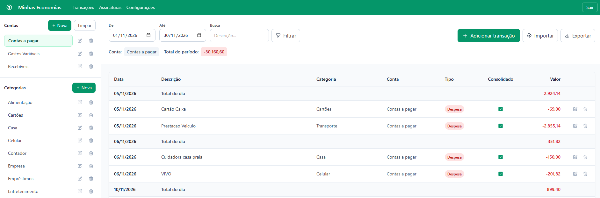
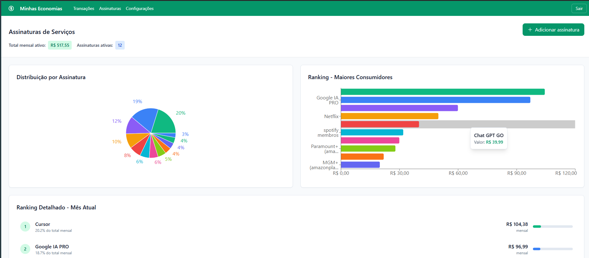

Contas, transações, categorias, assinaturas e alertas no Discord. Self-hosted, com Docker, login Google e seus dados em um Postgres que é seu.
Subir com DockerVer no GitHubDespesas, receitas e transferências organizadas por conta e categoria.
Acompanhe recorrências e próximos vencimentos.
CSV, XLS e XLSX com pré-visualização, exportação por período.
Avisos de itens em atraso e assinaturas, mais webhooks.
OAuth com dados isolados por usuário.
Compose com banco, API e web; migrations automáticas.


git clone https://github.com/lucodifier/economy.git cd economy cp .env.example .env # preencha as chaves Google e a senha do banco docker compose up -d --build # http://localhost:5176
NestJS · Prisma · PostgreSQL · Next.js · Tailwind · NextAuth · Docker